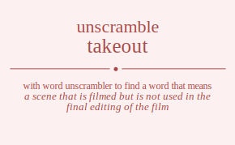

The word found after unscrambling takeout means that a scene that is filmed but is not used in the final editing of the film, .

The word found after unscrambling takeout means that a scene that is filmed but is not used in the final editing of the film, .
You can also find solutions for different combinations of letters in takeout like takeout takeotu takeuot takeuto taketou taketuo takoeut takoetu takouet takoute takoteu takotue takueot takueto takuoet takuote takuteo takutoe takteou takteuo taktoeu taktoue taktueo taktuoe taekout taekotu taekuot taekuto taektou taektuo taeokut taeoktu taeoukt taeoutk taeotku taeotuk taeukot taeukto taeuokt taeuotk taeutko taeutok taetkou taetkuo taetoku taetouk taetuko taetuok taokeut taoketu taokuet taokute taokteu taoktue taoekut taoektu taoeukt taoeutk taoetku taoetuk taouket taoukte taouekt taouetk taoutke taoutek taotkeu taotkue taoteku taoteuk taotuke taotuek taukeot tauketo taukoet taukote taukteo tauktoe tauekot tauekto taueokt taueotk tauetko tauetok tauoket tauokte tauoekt tauoetk tauotke tauotek tautkeo tautkoe tauteko tauteok tautoke tautoek tatkeou tatkeuo tatkoeu tatkoue tatkueo tatkuoe tatekou tatekuo tateoku tateouk tateuko tateuok tatokeu tatokue tatoeku tatoeuk tatouke tatouek tatukeo tatukoe tatueko tatueok tatuoke tatuoek tkaeout tkaeotu tkaeuot tkaeuto tkaetou tkaetuo tkaoeut tkaoetu tkaouet tkaoute tkaoteu tkaotue tkaueot tkaueto tkauoet tkauote tkauteo tkautoe tkateou tkateuo tkatoeu tkatoue tkatueo tkatuoe tkeaout tkeaotu tkeauot tkeauto tkeatou tkeatuo tkeoaut tkeoatu tkeouat tkeouta tkeotau tkeotua tkeuaot tkeuato tkeuoat tkeuota tkeutao tkeutoa tketaou tketauo tketoau tketoua tketuao tketuoa tkoaeut tkoaetu tkoauet tkoaute tkoateu tkoatue tkoeaut tkoeatu tkoeuat tkoeuta tkoetau tkoetua tkouaet tkouate tkoueat tkoueta tkoutae tkoutea tkotaeu tkotaue tkoteau tkoteua tkotuae tkotuea tkuaeot tkuaeto tkuaoet tkuaote tkuateo tkuatoe tkueaot tkueato tkueoat tkueota tkuetao tkuetoa tkuoaet tkuoate tkuoeat tkuoeta tkuotae tkuotea tkutaeo tkutaoe tkuteao tkuteoa tkutoae tkutoea tktaeou tktaeuo tktaoeu tktaoue tktaueo tktauoe tkteaou tkteauo tkteoau tkteoua tkteuao tkteuoa tktoaeu tktoaue tktoeau tktoeua tktouae tktouea tktuaeo tktuaoe tktueao tktueoa tktuoae tktuoea teakout teakotu teakuot teakuto teaktou teaktuo teaokut teaoktu teaoukt teaoutk teaotku teaotuk teaukot teaukto teauokt teauotk teautko teautok teatkou teatkuo teatoku teatouk teatuko teatuok tekaout tekaotu tekauot tekauto tekatou tekatuo tekoaut tekoatu tekouat tekouta tekotau tekotua tekuaot tekuato tekuoat tekuota tekutao tekutoa tektaou tektauo tektoau tektoua tektuao tektuoa teoakut teoaktu teoaukt teoautk teoatku teoatuk teokaut teokatu teokuat teokuta teoktau teoktua teouakt teouatk teoukat teoukta teoutak teoutka teotaku teotauk teotkau teotkua teotuak teotuka teuakot teuakto teuaokt teuaotk teuatko teuatok teukaot teukato teukoat teukota teuktao teuktoa teuoakt teuoatk teuokat teuokta teuotak teuotka teutako teutaok teutkao teutkoa teutoak teutoka tetakou tetakuo tetaoku tetaouk tetauko tetauok tetkaou tetkauo tetkoau tetkoua tetkuao tetkuoa tetoaku tetoauk tetokau tetokua tetouak tetouka tetuako tetuaok tetukao tetukoa tetuoak tetuoka toakeut toaketu toakuet toakute toakteu toaktue toaekut toaektu toaeukt toaeutk toaetku toaetuk toauket toaukte toauekt toauetk toautke toautek toatkeu toatkue toateku toateuk toatuke toatuek tokaeut tokaetu tokauet tokaute tokateu tokatue tokeaut tokeatu tokeuat tokeuta toketau toketua tokuaet tokuate tokueat tokueta tokutae tokutea toktaeu toktaue tokteau tokteua toktuae toktuea toeakut toeaktu toeaukt toeautk toeatku toeatuk toekaut toekatu toekuat toekuta toektau toektua toeuakt toeuatk toeukat toeukta toeutak toeutka toetaku toetauk toetkau toetkua toetuak toetuka touaket touakte touaekt touaetk touatke touatek toukaet toukate toukeat touketa touktae touktea toueakt toueatk touekat touekta touetak touetka toutake toutaek toutkae toutkea touteak touteka totakeu totakue totaeku totaeuk totauke totauek totkaeu totkaue totkeau totkeua totkuae totkuea toteaku toteauk totekau totekua toteuak toteuka totuake totuaek totukae totukea totueak totueka tuakeot tuaketo tuakoet tuakote tuakteo tuaktoe tuaekot tuaekto tuaeokt tuaeotk tuaetko tuaetok tuaoket tuaokte tuaoekt tuaoetk tuaotke tuaotek tuatkeo tuatkoe tuateko tuateok tuatoke tuatoek tukaeot tukaeto tukaoet tukaote tukateo tukatoe tukeaot tukeato tukeoat tukeota tuketao tuketoa tukoaet tukoate tukoeat tukoeta tukotae tukotea tuktaeo tuktaoe tukteao tukteoa tuktoae tuktoea tueakot tueakto tueaokt tueaotk tueatko tueatok tuekaot tuekato tuekoat tuekota tuektao tuektoa tueoakt tueoatk tueokat tueokta tueotak tueotka tuetako tuetaok tuetkao tuetkoa tuetoak tuetoka tuoaket tuoakte tuoaekt tuoaetk tuoatke tuoatek tuokaet tuokate tuokeat tuoketa tuoktae tuoktea tuoeakt tuoeatk tuoekat tuoekta tuoetak tuoetka tuotake tuotaek tuotkae tuotkea tuoteak tuoteka tutakeo tutakoe tutaeko tutaeok tutaoke tutaoek tutkaeo tutkaoe tutkeao tutkeoa tutkoae tutkoea tuteako tuteaok tutekao tutekoa tuteoak tuteoka tutoake tutoaek tutokae tutokea tutoeak tutoeka ttakeou ttakeuo ttakoeu ttakoue ttakueo ttakuoe ttaekou ttaekuo ttaeoku ttaeouk ttaeuko ttaeuok ttaokeu ttaokue ttaoeku ttaoeuk ttaouke ttaouek ttaukeo ttaukoe ttaueko ttaueok ttauoke ttauoek ttkaeou ttkaeuo ttkaoeu ttkaoue ttkaueo ttkauoe ttkeaou ttkeauo ttkeoau ttkeoua ttkeuao ttkeuoa ttkoaeu ttkoaue ttkoeau ttkoeua ttkouae ttkouea ttkuaeo ttkuaoe ttkueao ttkueoa ttkuoae ttkuoea tteakou tteakuo tteaoku tteaouk tteauko tteauok ttekaou ttekauo ttekoau ttekoua ttekuao ttekuoa tteoaku tteoauk tteokau tteokua tteouak tteouka tteuako tteuaok tteukao tteukoa tteuoak tteuoka ttoakeu ttoakue ttoaeku ttoaeuk ttoauke ttoauek ttokaeu ttokaue ttokeau ttokeua ttokuae ttokuea ttoeaku ttoeauk ttoekau ttoekua ttoeuak ttoeuka ttouake ttouaek ttoukae ttoukea ttoueak ttoueka ttuakeo ttuakoe ttuaeko ttuaeok ttuaoke ttuaoek ttukaeo ttukaoe ttukeao ttukeoa ttukoae ttukoea ttueako ttueaok ttuekao ttuekoa ttueoak ttueoka ttuoake ttuoaek ttuokae ttuokea ttuoeak ttuoeka atkeout atkeotu atkeuot atkeuto atketou atketuo atkoeut atkoetu atkouet atkoute atkoteu atkotue atkueot atkueto atkuoet atkuote atkuteo atkutoe atkteou atkteuo atktoeu atktoue atktueo atktuoe atekout atekotu atekuot atekuto atektou atektuo ateokut ateoktu ateoukt ateoutk ateotku ateotuk ateukot ateukto ateuokt ateuotk ateutko ateutok atetkou atetkuo atetoku atetouk atetuko atetuok atokeut atoketu atokuet atokute atokteu atoktue atoekut atoektu atoeukt atoeutk atoetku atoetuk atouket atoukte atouekt atouetk atoutke atoutek atotkeu atotkue atoteku atoteuk atotuke atotuek atukeot atuketo atukoet atukote atukteo atuktoe atuekot atuekto atueokt atueotk atuetko atuetok atuoket atuokte atuoekt atuoetk atuotke atuotek atutkeo atutkoe atuteko atuteok atutoke atutoek attkeou attkeuo attkoeu attkoue attkueo attkuoe attekou attekuo atteoku atteouk atteuko atteuok attokeu attokue attoeku attoeuk attouke attouek attukeo attukoe attueko attueok attuoke attuoek akteout akteotu akteuot akteuto aktetou aktetuo aktoeut aktoetu aktouet aktoute aktoteu aktotue aktueot aktueto aktuoet aktuote aktuteo aktutoe aktteou aktteuo akttoeu akttoue akttueo akttuoe aketout aketotu aketuot aketuto akettou akettuo akeotut akeottu akeoutt akeoutt akeottu akeotut akeutot akeutto akeuott akeuott akeutto akeutot akettou akettuo aketotu aketout aketuto aketuot akoteut akotetu akotuet akotute akotteu akottue akoetut akoettu akoeutt akoeutt akoettu akoetut akoutet akoutte akouett akouett akoutte akoutet akotteu akottue akotetu akoteut akotute akotuet akuteot akuteto akutoet akutote akutteo akuttoe akuetot akuetto akueott akueott akuetto akuetot akuotet akuotte akuoett akuoett akuotte akuotet akutteo akuttoe akuteto akuteot akutote akutoet aktteou aktteuo akttoeu akttoue akttueo akttuoe aktetou aktetuo akteotu akteout akteuto akteuot aktoteu aktotue aktoetu aktoeut aktoute aktouet aktuteo aktutoe aktueto aktueot aktuote aktuoet aetkout aetkotu aetkuot aetkuto aetktou aetktuo aetokut aetoktu aetoukt aetoutk aetotku aetotuk aetukot aetukto aetuokt aetuotk aetutko aetutok aettkou aettkuo aettoku aettouk aettuko aettuok aektout aektotu aektuot aektuto aekttou aekttuo aekotut aekottu aekoutt aekoutt aekottu aekotut aekutot aekutto aekuott aekuott aekutto aekutot aekttou aekttuo aektotu aektout aektuto aektuot aeotkut aeotktu aeotukt aeotutk aeottku aeottuk aeoktut aeokttu aeokutt aeokutt aeokttu aeoktut aeoutkt aeouttk aeouktt aeouktt aeouttk aeoutkt aeottku aeottuk aeotktu aeotkut aeotutk aeotukt aeutkot aeutkto aeutokt aeutotk aeuttko aeuttok aeuktot aeuktto aeukott aeukott aeuktto aeuktot aeuotkt aeuottk aeuoktt aeuoktt aeuottk aeuotkt aeuttko aeuttok aeutkto aeutkot aeutotk aeutokt aettkou aettkuo aettoku aettouk aettuko aettuok aetktou aetktuo aetkotu aetkout aetkuto aetkuot aetotku aetotuk aetoktu aetokut aetoutk aetoukt aetutko aetutok aetukto aetukot aetuotk aetuokt aotkeut aotketu aotkuet aotkute aotkteu aotktue aotekut aotektu aoteukt aoteutk aotetku aotetuk aotuket aotukte aotuekt aotuetk aotutke aotutek aottkeu aottkue aotteku aotteuk aottuke aottuek aokteut aoktetu aoktuet aoktute aoktteu aokttue aoketut aokettu aokeutt aokeutt aokettu aoketut aokutet aokutte aokuett aokuett aokutte aokutet aoktteu aokttue aoktetu aokteut aoktute aoktuet aoetkut aoetktu aoetukt aoetutk aoettku aoettuk aoektut aoekttu aoekutt aoekutt aoekttu aoektut aoeutkt aoeuttk aoeuktt aoeuktt aoeuttk aoeutkt aoettku aoettuk aoetktu aoetkut aoetutk aoetukt aoutket aoutkte aoutekt aoutetk aouttke aouttek aouktet aouktte aoukett aoukett aouktte aouktet aouetkt aouettk aouektt aouektt aouettk aouetkt aouttke aouttek aoutkte aoutket aoutetk aoutekt aottkeu aottkue aotteku aotteuk aottuke aottuek aotkteu aotktue aotketu aotkeut aotkute aotkuet aotetku aotetuk aotektu aotekut aoteutk aoteukt aotutke aotutek aotukte aotuket aotuetk aotuekt autkeot autketo autkoet autkote autkteo autktoe autekot autekto auteokt auteotk autetko autetok autoket autokte autoekt autoetk autotke autotek auttkeo auttkoe autteko autteok auttoke auttoek aukteot aukteto auktoet auktote auktteo aukttoe auketot auketto aukeott aukeott auketto auketot aukotet aukotte aukoett aukoett aukotte aukotet auktteo aukttoe aukteto aukteot auktote auktoet auetkot auetkto auetokt auetotk auettko auettok auektot auektto auekott auekott auektto auektot aueotkt aueottk aueoktt aueoktt aueottk aueotkt auettko auettok auetkto auetkot auetotk auetokt auotket auotkte auotekt auotetk auottke auottek auoktet auoktte auokett auokett auoktte auoktet auoetkt auoettk auoektt auoektt auoettk auoetkt auottke auottek auotkte auotket auotetk auotekt auttkeo auttkoe autteko autteok auttoke auttoek autkteo autktoe autketo autkeot autkote autkoet autetko autetok autekto autekot auteotk auteokt autotke autotek autokte autoket autoetk autoekt attkeou attkeuo attkoeu attkoue attkueo attkuoe attekou attekuo atteoku atteouk atteuko atteuok attokeu attokue attoeku attoeuk attouke attouek attukeo attukoe attueko attueok attuoke attuoek atkteou atkteuo atktoeu atktoue atktueo atktuoe atketou atketuo atkeotu atkeout atkeuto atkeuot atkoteu atkotue atkoetu atkoeut atkoute atkouet atkuteo atkutoe atkueto atkueot atkuote atkuoet atetkou atetkuo atetoku atetouk atetuko atetuok atektou atektuo atekotu atekout atekuto atekuot ateotku ateotuk ateoktu ateokut ateoutk ateoukt ateutko ateutok ateukto ateukot ateuotk ateuokt atotkeu atotkue atoteku atoteuk atotuke atotuek atokteu atoktue atoketu atokeut atokute atokuet atoetku atoetuk atoektu atoekut atoeutk atoeukt atoutke atoutek atoukte atouket atouetk atouekt atutkeo atutkoe atuteko atuteok atutoke atutoek atukteo atuktoe atuketo atukeot atukote atukoet atuetko atuetok atuekto atuekot atueotk atueokt atuotke atuotek atuokte atuoket atuoetk atuoekt ktaeout ktaeotu ktaeuot ktaeuto ktaetou ktaetuo ktaoeut ktaoetu ktaouet ktaoute ktaoteu ktaotue ktaueot ktaueto ktauoet ktauote ktauteo ktautoe ktateou ktateuo ktatoeu ktatoue ktatueo ktatuoe kteaout kteaotu kteauot kteauto kteatou kteatuo kteoaut kteoatu kteouat kteouta kteotau kteotua kteuaot kteuato kteuoat kteuota kteutao kteutoa ktetaou ktetauo ktetoau ktetoua ktetuao ktetuoa ktoaeut ktoaetu ktoauet ktoaute ktoateu ktoatue ktoeaut ktoeatu ktoeuat ktoeuta ktoetau ktoetua ktouaet ktouate ktoueat ktoueta ktoutae ktoutea ktotaeu ktotaue ktoteau ktoteua ktotuae ktotuea ktuaeot ktuaeto ktuaoet ktuaote ktuateo ktuatoe ktueaot ktueato ktueoat ktueota ktuetao ktuetoa ktuoaet ktuoate ktuoeat ktuoeta ktuotae ktuotea ktutaeo ktutaoe ktuteao ktuteoa ktutoae ktutoea kttaeou kttaeuo kttaoeu kttaoue kttaueo kttauoe ktteaou ktteauo ktteoau ktteoua ktteuao ktteuoa kttoaeu kttoaue kttoeau kttoeua kttouae kttouea kttuaeo kttuaoe kttueao kttueoa kttuoae kttuoea kateout kateotu kateuot kateuto katetou katetuo katoeut katoetu katouet katoute katoteu katotue katueot katueto katuoet katuote katuteo katutoe katteou katteuo kattoeu kattoue kattueo kattuoe kaetout kaetotu kaetuot kaetuto kaettou kaettuo kaeotut kaeottu kaeoutt kaeoutt kaeottu kaeotut kaeutot kaeutto kaeuott kaeuott kaeutto kaeutot kaettou kaettuo kaetotu kaetout kaetuto kaetuot kaoteut kaotetu kaotuet kaotute kaotteu kaottue kaoetut kaoettu kaoeutt kaoeutt kaoettu kaoetut kaoutet kaoutte kaouett kaouett kaoutte kaoutet kaotteu kaottue kaotetu kaoteut kaotute kaotuet kauteot kauteto kautoet kautote kautteo kauttoe kauetot kauetto kaueott kaueott kauetto kauetot kauotet kauotte kauoett kauoett kauotte kauotet kautteo kauttoe kauteto kauteot kautote kautoet katteou katteuo kattoeu kattoue kattueo kattuoe katetou katetuo kateotu kateout kateuto kateuot katoteu katotue katoetu katoeut katoute katouet katuteo katutoe katueto katueot katuote katuoet ketaout ketaotu ketauot ketauto ketatou ketatuo ketoaut ketoatu ketouat ketouta ketotau ketotua ketuaot ketuato ketuoat ketuota ketutao ketutoa kettaou kettauo kettoau kettoua kettuao kettuoa keatout keatotu keatuot keatuto keattou keattuo keaotut keaottu keaoutt keaoutt keaottu keaotut keautot keautto keauott keauott keautto keautot keattou keattuo keatotu keatout keatuto keatuot keotaut keotatu keotuat keotuta keottau keottua keoatut keoattu keoautt keoautt keoattu keoatut keoutat keoutta keouatt keouatt keoutta keoutat keottau keottua keotatu keotaut keotuta keotuat keutaot keutato keutoat keutota keuttao keuttoa keuatot keuatto keuaott keuaott keuatto keuatot keuotat keuotta keuoatt keuoatt keuotta keuotat keuttao keuttoa keutato keutaot keutota keutoat kettaou kettauo kettoau kettoua kettuao kettuoa ketatou ketatuo ketaotu ketaout ketauto ketauot ketotau ketotua ketoatu ketoaut ketouta ketouat ketutao ketutoa ketuato ketuaot ketuota ketuoat kotaeut kotaetu kotauet kotaute kotateu kotatue koteaut koteatu koteuat koteuta kotetau kotetua kotuaet kotuate kotueat kotueta kotutae kotutea kottaeu kottaue kotteau kotteua kottuae kottuea koateut koatetu koatuet koatute koatteu koattue koaetut koaettu koaeutt koaeutt koaettu koaetut koautet koautte koauett koauett koautte koautet koatteu koattue koatetu koateut koatute koatuet koetaut koetatu koetuat koetuta koettau koettua koeatut koeattu koeautt koeautt koeattu koeatut koeutat koeutta koeuatt koeuatt koeutta koeutat koettau koettua koetatu koetaut koetuta koetuat koutaet koutate kouteat kouteta kouttae kouttea kouatet kouatte kouaett kouaett kouatte kouatet kouetat kouetta koueatt koueatt kouetta kouetat kouttae kouttea koutate koutaet kouteta kouteat kottaeu kottaue kotteau kotteua kottuae kottuea kotateu kotatue kotaetu kotaeut kotaute kotauet kotetau kotetua koteatu koteaut koteuta koteuat kotutae kotutea kotuate kotuaet kotueta kotueat kutaeot kutaeto kutaoet kutaote kutateo kutatoe kuteaot kuteato kuteoat kuteota kutetao kutetoa kutoaet kutoate kutoeat kutoeta kutotae kutotea kuttaeo kuttaoe kutteao kutteoa kuttoae kuttoea kuateot kuateto kuatoet kuatote kuatteo kuattoe kuaetot kuaetto kuaeott kuaeott kuaetto kuaetot kuaotet kuaotte kuaoett kuaoett kuaotte kuaotet kuatteo kuattoe kuateto kuateot kuatote kuatoet kuetaot kuetato kuetoat kuetota kuettao kuettoa kueatot kueatto kueaott kueaott kueatto kueatot kueotat kueotta kueoatt kueoatt kueotta kueotat kuettao kuettoa kuetato kuetaot kuetota kuetoat kuotaet kuotate kuoteat kuoteta kuottae kuottea kuoatet kuoatte kuoaett kuoaett kuoatte kuoatet kuoetat kuoetta kuoeatt kuoeatt kuoetta kuoetat kuottae kuottea kuotate kuotaet kuoteta kuoteat kuttaeo kuttaoe kutteao kutteoa kuttoae kuttoea kutateo kutatoe kutaeto kutaeot kutaote kutaoet kutetao kutetoa kuteato kuteaot kuteota kuteoat kutotae kutotea kutoate kutoaet kutoeta kutoeat kttaeou kttaeuo kttaoeu kttaoue kttaueo kttauoe ktteaou ktteauo ktteoau ktteoua ktteuao ktteuoa kttoaeu kttoaue kttoeau kttoeua kttouae kttouea kttuaeo kttuaoe kttueao kttueoa kttuoae kttuoea ktateou ktateuo ktatoeu ktatoue ktatueo ktatuoe ktaetou ktaetuo ktaeotu ktaeout ktaeuto ktaeuot ktaoteu ktaotue ktaoetu ktaoeut ktaoute ktaouet ktauteo ktautoe ktaueto ktaueot ktauote ktauoet ktetaou ktetauo ktetoau ktetoua ktetuao ktetuoa kteatou kteatuo kteaotu kteaout kteauto kteauot kteotau kteotua kteoatu kteoaut kteouta kteouat kteutao kteutoa kteuato kteuaot kteuota kteuoat ktotaeu ktotaue ktoteau ktoteua ktotuae ktotuea ktoateu ktoatue ktoaetu ktoaeut ktoaute ktoauet ktoetau ktoetua ktoeatu ktoeaut ktoeuta ktoeuat ktoutae ktoutea ktouate ktouaet ktoueta ktoueat ktutaeo ktutaoe ktuteao ktuteoa ktutoae ktutoea ktuateo ktuatoe ktuaeto ktuaeot ktuaote ktuaoet ktuetao ktuetoa ktueato ktueaot ktueota ktueoat ktuotae ktuotea ktuoate ktuoaet ktuoeta ktuoeat etakout etakotu etakuot etakuto etaktou etaktuo etaokut etaoktu etaoukt etaoutk etaotku etaotuk etaukot etaukto etauokt etauotk etautko etautok etatkou etatkuo etatoku etatouk etatuko etatuok etkaout etkaotu etkauot etkauto etkatou etkatuo etkoaut etkoatu etkouat etkouta etkotau etkotua etkuaot etkuato etkuoat etkuota etkutao etkutoa etktaou etktauo etktoau etktoua etktuao etktuoa etoakut etoaktu etoaukt etoautk etoatku etoatuk etokaut etokatu etokuat etokuta etoktau etoktua etouakt etouatk etoukat etoukta etoutak etoutka etotaku etotauk etotkau etotkua etotuak etotuka etuakot etuakto etuaokt etuaotk etuatko etuatok etukaot etukato etukoat etukota etuktao etuktoa etuoakt etuoatk etuokat etuokta etuotak etuotka etutako etutaok etutkao etutkoa etutoak etutoka ettakou ettakuo ettaoku ettaouk ettauko ettauok ettkaou ettkauo ettkoau ettkoua ettkuao ettkuoa ettoaku ettoauk ettokau ettokua ettouak ettouka ettuako ettuaok ettukao ettukoa ettuoak ettuoka eatkout eatkotu eatkuot eatkuto eatktou eatktuo eatokut eatoktu eatoukt eatoutk eatotku eatotuk eatukot eatukto eatuokt eatuotk eatutko eatutok eattkou eattkuo eattoku eattouk eattuko eattuok eaktout eaktotu eaktuot eaktuto eakttou eakttuo eakotut eakottu eakoutt eakoutt eakottu eakotut eakutot eakutto eakuott eakuott eakutto eakutot eakttou eakttuo eaktotu eaktout eaktuto eaktuot eaotkut eaotktu eaotukt eaotutk eaottku eaottuk eaoktut eaokttu eaokutt eaokutt eaokttu eaoktut eaoutkt eaouttk eaouktt eaouktt eaouttk eaoutkt eaottku eaottuk eaotktu eaotkut eaotutk eaotukt eautkot eautkto eautokt eautotk eauttko eauttok eauktot eauktto eaukott eaukott eauktto eauktot eauotkt eauottk eauoktt eauoktt eauottk eauotkt eauttko eauttok eautkto eautkot eautotk eautokt eattkou eattkuo eattoku eattouk eattuko eattuok eatktou eatktuo eatkotu eatkout eatkuto eatkuot eatotku eatotuk eatoktu eatokut eatoutk eatoukt eatutko eatutok eatukto eatukot eatuotk eatuokt ektaout ektaotu ektauot ektauto ektatou ektatuo ektoaut ektoatu ektouat ektouta ektotau ektotua ektuaot ektuato ektuoat ektuota ektutao ektutoa ekttaou ekttauo ekttoau ekttoua ekttuao ekttuoa ekatout ekatotu ekatuot ekatuto ekattou ekattuo ekaotut ekaottu ekaoutt ekaoutt ekaottu ekaotut ekautot ekautto ekauott ekauott ekautto ekautot ekattou ekattuo ekatotu ekatout ekatuto ekatuot ekotaut ekotatu ekotuat ekotuta ekottau ekottua ekoatut ekoattu ekoautt ekoautt ekoattu ekoatut ekoutat ekoutta ekouatt ekouatt ekoutta ekoutat ekottau ekottua ekotatu ekotaut ekotuta ekotuat ekutaot ekutato ekutoat ekutota ekuttao ekuttoa ekuatot ekuatto ekuaott ekuaott ekuatto ekuatot ekuotat ekuotta ekuoatt ekuoatt ekuotta ekuotat ekuttao ekuttoa ekutato ekutaot ekutota ekutoat ekttaou ekttauo ekttoau ekttoua ekttuao ekttuoa ektatou ektatuo ektaotu ektaout ektauto ektauot ektotau ektotua ektoatu ektoaut ektouta ektouat ektutao ektutoa ektuato ektuaot ektuota ektuoat eotakut eotaktu eotaukt eotautk eotatku eotatuk eotkaut eotkatu eotkuat eotkuta eotktau eotktua eotuakt eotuatk eotukat eotukta eotutak eotutka eottaku eottauk eottkau eottkua eottuak eottuka eoatkut eoatktu eoatukt eoatutk eoattku eoattuk eoaktut eoakttu eoakutt eoakutt eoakttu eoaktut eoautkt eoauttk eoauktt eoauktt eoauttk eoautkt eoattku eoattuk eoatktu eoatkut eoatutk eoatukt eoktaut eoktatu eoktuat eoktuta eokttau eokttua eokatut eokattu eokautt eokautt eokattu eokatut eokutat eokutta eokuatt eokuatt eokutta eokutat eokttau eokttua eoktatu eoktaut eoktuta eoktuat eoutakt eoutatk eoutkat eoutkta eouttak eouttka eouatkt eouattk eouaktt eouaktt eouattk eouatkt eouktat eouktta eoukatt eoukatt eouktta eouktat eouttak eouttka eoutatk eoutakt eoutkta eoutkat eottaku eottauk eottkau eottkua eottuak eottuka eotatku eotatuk eotaktu eotakut eotautk eotaukt eotktau eotktua eotkatu eotkaut eotkuta eotkuat eotutak eotutka eotuatk eotuakt eotukta eotukat eutakot eutakto eutaokt eutaotk eutatko eutatok eutkaot eutkato eutkoat eutkota eutktao eutktoa eutoakt eutoatk eutokat eutokta eutotak eutotka euttako euttaok euttkao euttkoa euttoak euttoka euatkot euatkto euatokt euatotk euattko euattok euaktot euaktto euakott euakott euaktto euaktot euaotkt euaottk euaoktt euaoktt euaottk euaotkt euattko euattok euatkto euatkot euatotk euatokt euktaot euktato euktoat euktota eukttao eukttoa eukatot eukatto eukaott eukaott eukatto eukatot eukotat eukotta eukoatt eukoatt eukotta eukotat eukttao eukttoa euktato euktaot euktota euktoat euotakt euotatk euotkat euotkta euottak euottka euoatkt euoattk euoaktt euoaktt euoattk euoatkt euoktat euoktta euokatt euokatt euoktta euoktat euottak euottka euotatk euotakt euotkta euotkat euttako euttaok euttkao euttkoa euttoak euttoka eutatko eutatok eutakto eutakot eutaotk eutaokt eutktao eutktoa eutkato eutkaot eutkota eutkoat eutotak eutotka eutoatk eutoakt eutokta eutokat ettakou ettakuo ettaoku ettaouk ettauko ettauok ettkaou ettkauo ettkoau ettkoua ettkuao ettkuoa ettoaku ettoauk ettokau ettokua ettouak ettouka ettuako ettuaok ettukao ettukoa ettuoak ettuoka etatkou etatkuo etatoku etatouk etatuko etatuok etaktou etaktuo etakotu etakout etakuto etakuot etaotku etaotuk etaoktu etaokut etaoutk etaoukt etautko etautok etaukto etaukot etauotk etauokt etktaou etktauo etktoau etktoua etktuao etktuoa etkatou etkatuo etkaotu etkaout etkauto etkauot etkotau etkotua etkoatu etkoaut etkouta etkouat etkutao etkutoa etkuato etkuaot etkuota etkuoat etotaku etotauk etotkau etotkua etotuak etotuka etoatku etoatuk etoaktu etoakut etoautk etoaukt etoktau etoktua etokatu etokaut etokuta etokuat etoutak etoutka etouatk etouakt etoukta etoukat etutako etutaok etutkao etutkoa etutoak etutoka etuatko etuatok etuakto etuakot etuaotk etuaokt etuktao etuktoa etukato etukaot etukota etukoat etuotak etuotka etuoatk etuoakt etuokta etuokat otakeut otaketu otakuet otakute otakteu otaktue otaekut otaektu otaeukt otaeutk otaetku otaetuk otauket otaukte otauekt otauetk otautke otautek otatkeu otatkue otateku otateuk otatuke otatuek otkaeut otkaetu otkauet otkaute otkateu otkatue otkeaut otkeatu otkeuat otkeuta otketau otketua otkuaet otkuate otkueat otkueta otkutae otkutea otktaeu otktaue otkteau otkteua otktuae otktuea oteakut oteaktu oteaukt oteautk oteatku oteatuk otekaut otekatu otekuat otekuta otektau otektua oteuakt oteuatk oteukat oteukta oteutak oteutka otetaku otetauk otetkau otetkua otetuak otetuka otuaket otuakte otuaekt otuaetk otuatke otuatek otukaet otukate otukeat otuketa otuktae otuktea otueakt otueatk otuekat otuekta otuetak otuetka otutake otutaek otutkae otutkea otuteak otuteka ottakeu ottakue ottaeku ottaeuk ottauke ottauek ottkaeu ottkaue ottkeau ottkeua ottkuae ottkuea otteaku otteauk ottekau ottekua otteuak otteuka ottuake ottuaek ottukae ottukea ottueak ottueka oatkeut oatketu oatkuet oatkute oatkteu oatktue oatekut oatektu oateukt oateutk oatetku oatetuk oatuket oatukte oatuekt oatuetk oatutke oatutek oattkeu oattkue oatteku oatteuk oattuke oattuek oakteut oaktetu oaktuet oaktute oaktteu oakttue oaketut oakettu oakeutt oakeutt oakettu oaketut oakutet oakutte oakuett oakuett oakutte oakutet oaktteu oakttue oaktetu oakteut oaktute oaktuet oaetkut oaetktu oaetukt oaetutk oaettku oaettuk oaektut oaekttu oaekutt oaekutt oaekttu oaektut oaeutkt oaeuttk oaeuktt oaeuktt oaeuttk oaeutkt oaettku oaettuk oaetktu oaetkut oaetutk oaetukt oautket oautkte oautekt oautetk oauttke oauttek oauktet oauktte oaukett oaukett oauktte oauktet oauetkt oauettk oauektt oauektt oauettk oauetkt oauttke oauttek oautkte oautket oautetk oautekt oattkeu oattkue oatteku oatteuk oattuke oattuek oatkteu oatktue oatketu oatkeut oatkute oatkuet oatetku oatetuk oatektu oatekut oateutk oateukt oatutke oatutek oatukte oatuket oatuetk oatuekt oktaeut oktaetu oktauet oktaute oktateu oktatue okteaut okteatu okteuat okteuta oktetau oktetua oktuaet oktuate oktueat oktueta oktutae oktutea okttaeu okttaue oktteau oktteua okttuae okttuea okateut okatetu okatuet okatute okatteu okattue okaetut okaettu okaeutt okaeutt okaettu okaetut okautet okautte okauett okauett okautte okautet okatteu okattue okatetu okateut okatute okatuet oketaut oketatu oketuat oketuta okettau okettua okeatut okeattu okeautt okeautt okeattu okeatut okeutat okeutta okeuatt okeuatt okeutta okeutat okettau okettua oketatu oketaut oketuta oketuat okutaet okutate okuteat okuteta okuttae okuttea okuatet okuatte okuaett okuaett okuatte okuatet okuetat okuetta okueatt okueatt okuetta okuetat okuttae okuttea okutate okutaet okuteta okuteat okttaeu okttaue oktteau oktteua okttuae okttuea oktateu oktatue oktaetu oktaeut oktaute oktauet oktetau oktetua okteatu okteaut okteuta okteuat oktutae oktutea oktuate oktuaet oktueta oktueat oetakut oetaktu oetaukt oetautk oetatku oetatuk oetkaut oetkatu oetkuat oetkuta oetktau oetktua oetuakt oetuatk oetukat oetukta oetutak oetutka oettaku oettauk oettkau oettkua oettuak oettuka oeatkut oeatktu oeatukt oeatutk oeattku oeattuk oeaktut oeakttu oeakutt oeakutt oeakttu oeaktut oeautkt oeauttk oeauktt oeauktt oeauttk oeautkt oeattku oeattuk oeatktu oeatkut oeatutk oeatukt oektaut oektatu oektuat oektuta oekttau oekttua oekatut oekattu oekautt oekautt oekattu oekatut oekutat oekutta oekuatt oekuatt oekutta oekutat oekttau oekttua oektatu oektaut oektuta oektuat oeutakt oeutatk oeutkat oeutkta oeuttak oeuttka oeuatkt oeuattk oeuaktt oeuaktt oeuattk oeuatkt oeuktat oeuktta oeukatt oeukatt oeuktta oeuktat oeuttak oeuttka oeutatk oeutakt oeutkta oeutkat oettaku oettauk oettkau oettkua oettuak oettuka oetatku oetatuk oetaktu oetakut oetautk oetaukt oetktau oetktua oetkatu oetkaut oetkuta oetkuat oetutak oetutka oetuatk oetuakt oetukta oetukat outaket outakte outaekt outaetk outatke outatek outkaet outkate outkeat outketa outktae outktea outeakt outeatk outekat outekta outetak outetka outtake outtaek outtkae outtkea outteak outteka ouatket ouatkte ouatekt ouatetk ouattke ouattek ouaktet ouaktte ouakett ouakett ouaktte ouaktet ouaetkt ouaettk ouaektt ouaektt ouaettk ouaetkt ouattke ouattek ouatkte ouatket ouatetk ouatekt ouktaet ouktate oukteat oukteta oukttae oukttea oukatet oukatte oukaett oukaett oukatte oukatet ouketat ouketta oukeatt oukeatt ouketta ouketat oukttae oukttea ouktate ouktaet oukteta oukteat ouetakt ouetatk ouetkat ouetkta ouettak ouettka oueatkt oueattk oueaktt oueaktt oueattk oueatkt ouektat ouektta ouekatt ouekatt ouektta ouektat ouettak ouettka ouetatk ouetakt ouetkta ouetkat outtake outtaek outtkae outtkea outteak outteka outatke outatek outakte outaket outaetk outaekt outktae outktea outkate outkaet outketa outkeat outetak outetka outeatk outeakt outekta outekat ottakeu ottakue ottaeku ottaeuk ottauke ottauek ottkaeu ottkaue ottkeau ottkeua ottkuae ottkuea otteaku otteauk ottekau ottekua otteuak otteuka ottuake ottuaek ottukae ottukea ottueak ottueka otatkeu otatkue otateku otateuk otatuke otatuek otakteu otaktue otaketu otakeut otakute otakuet otaetku otaetuk otaektu otaekut otaeutk otaeukt otautke otautek otaukte otauket otauetk otauekt otktaeu otktaue otkteau otkteua otktuae otktuea otkateu otkatue otkaetu otkaeut otkaute otkauet otketau otketua otkeatu otkeaut otkeuta otkeuat otkutae otkutea otkuate otkuaet otkueta otkueat otetaku otetauk otetkau otetkua otetuak otetuka oteatku oteatuk oteaktu oteakut oteautk oteaukt otektau otektua otekatu otekaut otekuta otekuat oteutak oteutka oteuatk oteuakt oteukta oteukat otutake otutaek otutkae otutkea otuteak otuteka otuatke otuatek otuakte otuaket otuaetk otuaekt otuktae otuktea otukate otukaet otuketa otukeat otuetak otuetka otueatk otueakt otuekta otuekat utakeot utaketo utakoet utakote utakteo utaktoe utaekot utaekto utaeokt utaeotk utaetko utaetok utaoket utaokte utaoekt utaoetk utaotke utaotek utatkeo utatkoe utateko utateok utatoke utatoek utkaeot utkaeto utkaoet utkaote utkateo utkatoe utkeaot utkeato utkeoat utkeota utketao utketoa utkoaet utkoate utkoeat utkoeta utkotae utkotea utktaeo utktaoe utkteao utkteoa utktoae utktoea uteakot uteakto uteaokt uteaotk uteatko uteatok utekaot utekato utekoat utekota utektao utektoa uteoakt uteoatk uteokat uteokta uteotak uteotka utetako utetaok utetkao utetkoa utetoak utetoka utoaket utoakte utoaekt utoaetk utoatke utoatek utokaet utokate utokeat utoketa utoktae utoktea utoeakt utoeatk utoekat utoekta utoetak utoetka utotake utotaek utotkae utotkea utoteak utoteka uttakeo uttakoe uttaeko uttaeok uttaoke uttaoek uttkaeo uttkaoe uttkeao uttkeoa uttkoae uttkoea utteako utteaok uttekao uttekoa utteoak utteoka uttoake uttoaek uttokae uttokea uttoeak uttoeka uatkeot uatketo uatkoet uatkote uatkteo uatktoe uatekot uatekto uateokt uateotk uatetko uatetok uatoket uatokte uatoekt uatoetk uatotke uatotek uattkeo uattkoe uatteko uatteok uattoke uattoek uakteot uakteto uaktoet uaktote uaktteo uakttoe uaketot uaketto uakeott uakeott uaketto uaketot uakotet uakotte uakoett uakoett uakotte uakotet uaktteo uakttoe uakteto uakteot uaktote uaktoet uaetkot uaetkto uaetokt uaetotk uaettko uaettok uaektot uaektto uaekott uaekott uaektto uaektot uaeotkt uaeottk uaeoktt uaeoktt uaeottk uaeotkt uaettko uaettok uaetkto uaetkot uaetotk uaetokt uaotket uaotkte uaotekt uaotetk uaottke uaottek uaoktet uaoktte uaokett uaokett uaoktte uaoktet uaoetkt uaoettk uaoektt uaoektt uaoettk uaoetkt uaottke uaottek uaotkte uaotket uaotetk uaotekt uattkeo uattkoe uatteko uatteok uattoke uattoek uatkteo uatktoe uatketo uatkeot uatkote uatkoet uatetko uatetok uatekto uatekot uateotk uateokt uatotke uatotek uatokte uatoket uatoetk uatoekt uktaeot uktaeto uktaoet uktaote uktateo uktatoe ukteaot ukteato ukteoat ukteota uktetao uktetoa uktoaet uktoate uktoeat uktoeta uktotae uktotea ukttaeo ukttaoe uktteao uktteoa ukttoae ukttoea ukateot ukateto ukatoet ukatote ukatteo ukattoe ukaetot ukaetto ukaeott ukaeott ukaetto ukaetot ukaotet ukaotte ukaoett ukaoett ukaotte ukaotet ukatteo ukattoe ukateto ukateot ukatote ukatoet uketaot uketato uketoat uketota ukettao ukettoa ukeatot ukeatto ukeaott ukeaott ukeatto ukeatot ukeotat ukeotta ukeoatt ukeoatt ukeotta ukeotat ukettao ukettoa uketato uketaot uketota uketoat ukotaet ukotate ukoteat ukoteta ukottae ukottea ukoatet ukoatte ukoaett ukoaett ukoatte ukoatet ukoetat ukoetta ukoeatt ukoeatt ukoetta ukoetat ukottae ukottea ukotate ukotaet ukoteta ukoteat ukttaeo ukttaoe uktteao uktteoa ukttoae ukttoea uktateo uktatoe uktaeto uktaeot uktaote uktaoet uktetao uktetoa ukteato ukteaot ukteota ukteoat uktotae uktotea uktoate uktoaet uktoeta uktoeat uetakot uetakto uetaokt uetaotk uetatko uetatok uetkaot uetkato uetkoat uetkota uetktao uetktoa uetoakt uetoatk uetokat uetokta uetotak uetotka uettako uettaok uettkao uettkoa uettoak uettoka ueatkot ueatkto ueatokt ueatotk ueattko ueattok ueaktot ueaktto ueakott ueakott ueaktto ueaktot ueaotkt ueaottk ueaoktt ueaoktt ueaottk ueaotkt ueattko ueattok ueatkto ueatkot ueatotk ueatokt uektaot uektato uektoat uektota uekttao uekttoa uekatot uekatto uekaott uekaott uekatto uekatot uekotat uekotta uekoatt uekoatt uekotta uekotat uekttao uekttoa uektato uektaot uektota uektoat ueotakt ueotatk ueotkat ueotkta ueottak ueottka ueoatkt ueoattk ueoaktt ueoaktt ueoattk ueoatkt ueoktat ueoktta ueokatt ueokatt ueoktta ueoktat ueottak ueottka ueotatk ueotakt ueotkta ueotkat uettako uettaok uettkao uettkoa uettoak uettoka uetatko uetatok uetakto uetakot uetaotk uetaokt uetktao uetktoa uetkato uetkaot uetkota uetkoat uetotak uetotka uetoatk uetoakt uetokta uetokat uotaket uotakte uotaekt uotaetk uotatke uotatek uotkaet uotkate uotkeat uotketa uotktae uotktea uoteakt uoteatk uotekat uotekta uotetak uotetka uottake uottaek uottkae uottkea uotteak uotteka uoatket uoatkte uoatekt uoatetk uoattke uoattek uoaktet uoaktte uoakett uoakett uoaktte uoaktet uoaetkt uoaettk uoaektt uoaektt uoaettk uoaetkt uoattke uoattek uoatkte uoatket uoatetk uoatekt uoktaet uoktate uokteat uokteta uokttae uokttea uokatet uokatte uokaett uokaett uokatte uokatet uoketat uoketta uokeatt uokeatt uoketta uoketat uokttae uokttea uoktate uoktaet uokteta uokteat uoetakt uoetatk uoetkat uoetkta uoettak uoettka uoeatkt uoeattk uoeaktt uoeaktt uoeattk uoeatkt uoektat uoektta uoekatt uoekatt uoektta uoektat uoettak uoettka uoetatk uoetakt uoetkta uoetkat uottake uottaek uottkae uottkea uotteak uotteka uotatke uotatek uotakte uotaket uotaetk uotaekt uotktae uotktea uotkate uotkaet uotketa uotkeat uotetak uotetka uoteatk uoteakt uotekta uotekat uttakeo uttakoe uttaeko uttaeok uttaoke uttaoek uttkaeo uttkaoe uttkeao uttkeoa uttkoae uttkoea utteako utteaok uttekao uttekoa utteoak utteoka uttoake uttoaek uttokae uttokea uttoeak uttoeka utatkeo utatkoe utateko utateok utatoke utatoek utakteo utaktoe utaketo utakeot utakote utakoet utaetko utaetok utaekto utaekot utaeotk utaeokt utaotke utaotek utaokte utaoket utaoetk utaoekt utktaeo utktaoe utkteao utkteoa utktoae utktoea utkateo utkatoe utkaeto utkaeot utkaote utkaoet utketao utketoa utkeato utkeaot utkeota utkeoat utkotae utkotea utkoate utkoaet utkoeta utkoeat utetako utetaok utetkao utetkoa utetoak utetoka uteatko uteatok uteakto uteakot uteaotk uteaokt utektao utektoa utekato utekaot utekota utekoat uteotak uteotka uteoatk uteoakt uteokta uteokat utotake utotaek utotkae utotkea utoteak utoteka utoatke utoatek utoakte utoaket utoaetk utoaekt utoktae utoktea utokate utokaet utoketa utokeat utoetak utoetka utoeatk utoeakt utoekta utoekat ttakeou ttakeuo ttakoeu ttakoue ttakueo ttakuoe ttaekou ttaekuo ttaeoku ttaeouk ttaeuko ttaeuok ttaokeu ttaokue ttaoeku ttaoeuk ttaouke ttaouek ttaukeo ttaukoe ttaueko ttaueok ttauoke ttauoek ttkaeou ttkaeuo ttkaoeu ttkaoue ttkaueo ttkauoe ttkeaou ttkeauo ttkeoau ttkeoua ttkeuao ttkeuoa ttkoaeu ttkoaue ttkoeau ttkoeua ttkouae ttkouea ttkuaeo ttkuaoe ttkueao ttkueoa ttkuoae ttkuoea tteakou tteakuo tteaoku tteaouk tteauko tteauok ttekaou ttekauo ttekoau ttekoua ttekuao ttekuoa tteoaku tteoauk tteokau tteokua tteouak tteouka tteuako tteuaok tteukao tteukoa tteuoak tteuoka ttoakeu ttoakue ttoaeku ttoaeuk ttoauke ttoauek ttokaeu ttokaue ttokeau ttokeua ttokuae ttokuea ttoeaku ttoeauk ttoekau ttoekua ttoeuak ttoeuka ttouake ttouaek ttoukae ttoukea ttoueak ttoueka ttuakeo ttuakoe ttuaeko ttuaeok ttuaoke ttuaoek ttukaeo ttukaoe ttukeao ttukeoa ttukoae ttukoea ttueako ttueaok ttuekao ttuekoa ttueoak ttueoka ttuoake ttuoaek ttuokae ttuokea ttuoeak ttuoeka tatkeou tatkeuo tatkoeu tatkoue tatkueo tatkuoe tatekou tatekuo tateoku tateouk tateuko tateuok tatokeu tatokue tatoeku tatoeuk tatouke tatouek tatukeo tatukoe tatueko tatueok tatuoke tatuoek takteou takteuo taktoeu taktoue taktueo taktuoe taketou taketuo takeotu takeout takeuto takeuot takoteu takotue takoetu takoeut takoute takouet takuteo takutoe takueto takueot takuote takuoet taetkou taetkuo taetoku taetouk taetuko taetuok taektou taektuo taekotu taekout taekuto taekuot taeotku taeotuk taeoktu taeokut taeoutk taeoukt taeutko taeutok taeukto taeukot taeuotk taeuokt taotkeu taotkue taoteku taoteuk taotuke taotuek taokteu taoktue taoketu taokeut taokute taokuet taoetku taoetuk taoektu taoekut taoeutk taoeukt taoutke taoutek taoukte taouket taouetk taouekt tautkeo tautkoe tauteko tauteok tautoke tautoek taukteo tauktoe tauketo taukeot taukote taukoet tauetko tauetok tauekto tauekot taueotk taueokt tauotke tauotek tauokte tauoket tauoetk tauoekt tktaeou tktaeuo tktaoeu tktaoue tktaueo tktauoe tkteaou tkteauo tkteoau tkteoua tkteuao tkteuoa tktoaeu tktoaue tktoeau tktoeua tktouae tktouea tktuaeo tktuaoe tktueao tktueoa tktuoae tktuoea tkateou tkateuo tkatoeu tkatoue tkatueo tkatuoe tkaetou tkaetuo tkaeotu tkaeout tkaeuto tkaeuot tkaoteu tkaotue tkaoetu tkaoeut tkaoute tkaouet tkauteo tkautoe tkaueto tkaueot tkauote tkauoet tketaou tketauo tketoau tketoua tketuao tketuoa tkeatou tkeatuo tkeaotu tkeaout tkeauto tkeauot tkeotau tkeotua tkeoatu tkeoaut tkeouta tkeouat tkeutao tkeutoa tkeuato tkeuaot tkeuota tkeuoat tkotaeu tkotaue tkoteau tkoteua tkotuae tkotuea tkoateu tkoatue tkoaetu tkoaeut tkoaute tkoauet tkoetau tkoetua tkoeatu tkoeaut tkoeuta tkoeuat tkoutae tkoutea tkouate tkouaet tkoueta tkoueat tkutaeo tkutaoe tkuteao tkuteoa tkutoae tkutoea tkuateo tkuatoe tkuaeto tkuaeot tkuaote tkuaoet tkuetao tkuetoa tkueato tkueaot tkueota tkueoat tkuotae tkuotea tkuoate tkuoaet tkuoeta tkuoeat tetakou tetakuo tetaoku tetaouk tetauko tetauok tetkaou tetkauo tetkoau tetkoua tetkuao tetkuoa tetoaku tetoauk tetokau tetokua tetouak tetouka tetuako tetuaok tetukao tetukoa tetuoak tetuoka teatkou teatkuo teatoku teatouk teatuko teatuok teaktou teaktuo teakotu teakout teakuto teakuot teaotku teaotuk teaoktu teaokut teaoutk teaoukt teautko teautok teaukto teaukot teauotk teauokt tektaou tektauo tektoau tektoua tektuao tektuoa tekatou tekatuo tekaotu tekaout tekauto tekauot tekotau tekotua tekoatu tekoaut tekouta tekouat tekutao tekutoa tekuato tekuaot tekuota tekuoat teotaku teotauk teotkau teotkua teotuak teotuka teoatku teoatuk teoaktu teoakut teoautk teoaukt teoktau teoktua teokatu teokaut teokuta teokuat teoutak teoutka teouatk teouakt teoukta teoukat teutako teutaok teutkao teutkoa teutoak teutoka teuatko teuatok teuakto teuakot teuaotk teuaokt teuktao teuktoa teukato teukaot teukota teukoat teuotak teuotka teuoatk teuoakt teuokta teuokat totakeu totakue totaeku totaeuk totauke totauek totkaeu totkaue totkeau totkeua totkuae totkuea toteaku toteauk totekau totekua toteuak toteuka totuake totuaek totukae totukea totueak totueka toatkeu toatkue toateku toateuk toatuke toatuek toakteu toaktue toaketu toakeut toakute toakuet toaetku toaetuk toaektu toaekut toaeutk toaeukt toautke toautek toaukte toauket toauetk toauekt toktaeu toktaue tokteau tokteua toktuae toktuea tokateu tokatue tokaetu tokaeut tokaute tokauet toketau toketua tokeatu tokeaut tokeuta tokeuat tokutae tokutea tokuate tokuaet tokueta tokueat toetaku toetauk toetkau toetkua toetuak toetuka toeatku toeatuk toeaktu toeakut toeautk toeaukt toektau toektua toekatu toekaut toekuta toekuat toeutak toeutka toeuatk toeuakt toeukta toeukat toutake toutaek toutkae toutkea touteak touteka touatke touatek touakte touaket touaetk touaekt touktae touktea toukate toukaet touketa toukeat touetak touetka toueatk toueakt touekta touekat tutakeo tutakoe tutaeko tutaeok tutaoke tutaoek tutkaeo tutkaoe tutkeao tutkeoa tutkoae tutkoea tuteako tuteaok tutekao tutekoa tuteoak tuteoka tutoake tutoaek tutokae tutokea tutoeak tutoeka tuatkeo tuatkoe tuateko tuateok tuatoke tuatoek tuakteo tuaktoe tuaketo tuakeot tuakote tuakoet tuaetko tuaetok tuaekto tuaekot tuaeotk tuaeokt tuaotke tuaotek tuaokte tuaoket tuaoetk tuaoekt tuktaeo tuktaoe tukteao tukteoa tuktoae tuktoea tukateo tukatoe tukaeto tukaeot tukaote tukaoet tuketao tuketoa tukeato tukeaot tukeota tukeoat tukotae tukotea tukoate tukoaet tukoeta tukoeat tuetako tuetaok tuetkao tuetkoa tuetoak tuetoka tueatko tueatok tueakto tueakot tueaotk tueaokt tuektao tuektoa tuekato tuekaot tuekota tuekoat tueotak tueotka tueoatk tueoakt tueokta tueokat tuotake tuotaek tuotkae tuotkea tuoteak tuoteka tuoatke tuoatek tuoakte tuoaket tuoaetk tuoaekt tuoktae tuoktea tuokate tuokaet tuoketa tuokeat tuoetak tuoetka tuoeatk tuoeakt tuoekta tuoekat.
Unscramble Words is registered trademark.